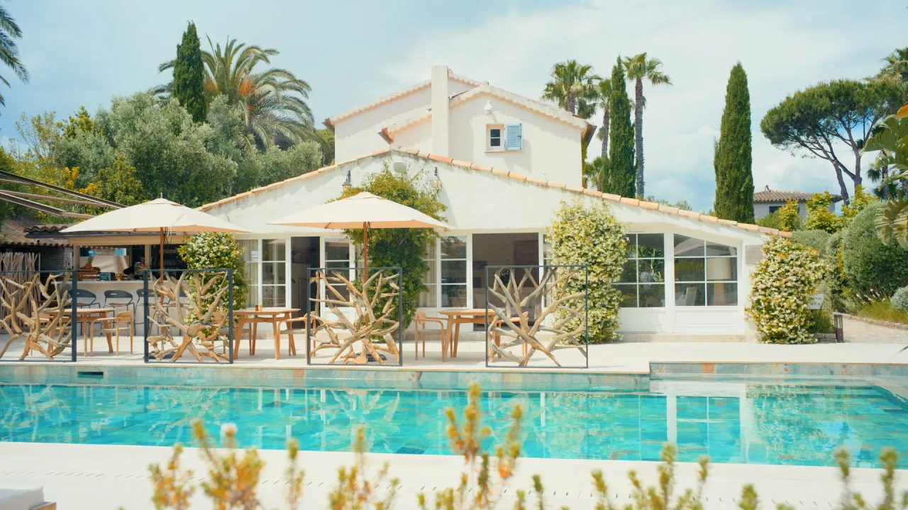

La Bastide des Salins - Hôtel 4 étoiles à Saint-Tropez
Équipe Technique
À propos du projet
La Bastide des Salins est un hôtel 4 étoiles à Saint-Tropez. Le client voulait une vidéo promotionnelle d'un genre précis : pas de mise en scène, pas de comédiens, pas de scénario. Juste le lieu, filmé tel qu'il est. Ce parti pris était une demande, et c'est aussi une manière de faire qui a du sens : ce genre de vidéo pose un regard neutre, elle montre l'hôtel sans le déguiser et laisse le visiteur se faire sa propre idée. Tournage en deux jours, montage court de 37 secondes. Ce vidéo promotionnelle laisse l'architecture, la lumière et les espaces parler d'eux-mêmes.
Une vidéo neutre pour le web, une vidéo dynamique pour les réseaux
Pour La Bastide des Salins, on a livré deux vidéos pensées pour deux usages différents. La version présentée plus haut est neutre et posée : format horizontal 16/9, sans mise en scène, faite pour le site de l'hôtel, là où le visiteur prend le temps de regarder.
À côté, on a réalisé un format vertical pour Instagram et les réseaux : plus court, plus rythmé, plus dynamique, calibré pour capter l'attention en quelques secondes dans un fil. Même lieu, même exigence, mais deux approches assumées selon l'endroit où la vidéo est vue.
Format vertical, pour Instagram


Vous souhaitez un film similaire ?
Dites-nous ce que vous voulez construire. On vous dit comment on peut le faire.
Parlons-en